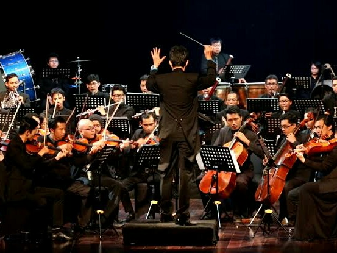
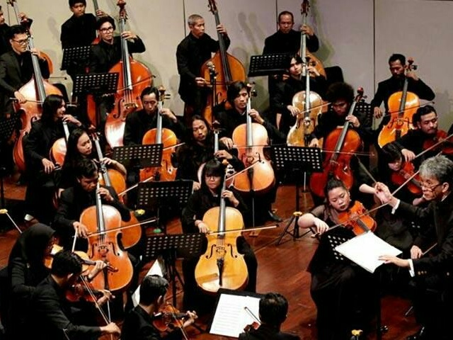

Musik Klasik


Musik klasik biasanya merujuk pada musik klasik Eropa, tetapi kadang-kadang juga pada musik klasik Persia, India, dsb. Musik klasik mempunyai makna luas, biasanya mengacu pada musik yang berakar dari rutinitas kesenian Barat, musik kristiani, dan musik orkestra, mencakup periode dari sekitar masa ke-9 hingga masa ke-21. Dahulu musik klasik di Eropa terutama digunakan untuk kebutuhan lagu di gereja ataupun lagu untuk pengiringan raja. Searah dengan pergantian zaman, mulai juga bermunculan musik klasik yang digunakan untuk kebutuhan lain, seperti musik klasik yang menggambarkan visual lewat cara audio, umpamanya lagu Cat and Mouse yang menggambarkan kucing mengejar tikus.